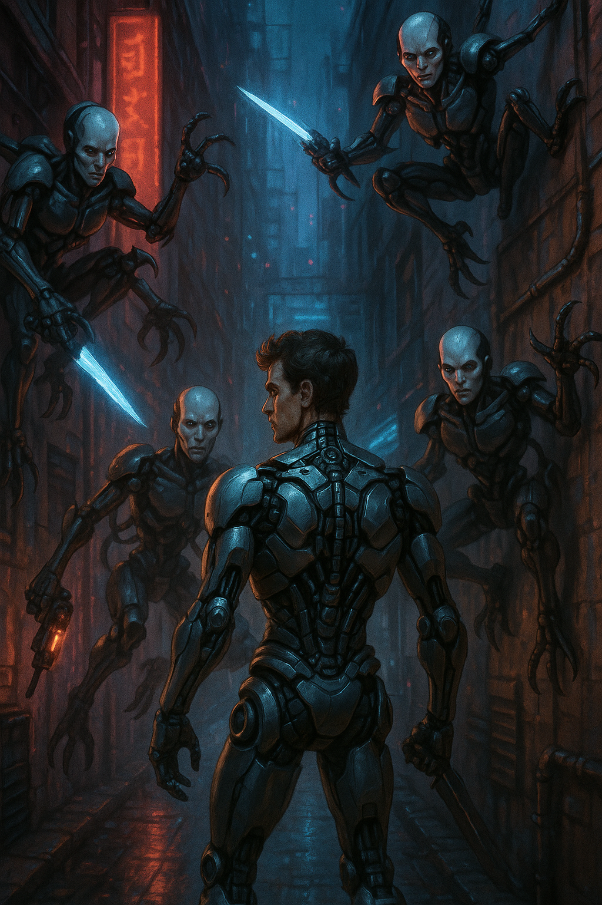

🤖
Cyborg & Artificial Realities
Am I human, or was I built to believe I am?
Play as part-machine in a world of generated cities and fading memories.
Cyberpunk themes meet existential dread. Blame! and NieR are reference points here.
🧠 What Defines This World Type?
- Post-human environments: infinite cities, mega-structures, glitch zones.
- Half-remembered pasts—was the war real, or inserted into your code?
- Cybernetic bodies: enhanced but unstable. Emotions may be simulated.
- Oppressive systems: AI governments, drones, rogue machines.
📚 Worldbuilding Tips
- Design the tech first: what has replaced humanity?
- Use corruption and decay as motifs—cities overgrown by data or rust.
- Develop protocols and jargon: e.g., "Memory Block C5", "Phantom Node".
- Introduce errors: false memories, glitched NPCs, unstable terrain.
🧩 Narrative Hooks
- You were built yesterday—but remember things from 200 years ago.
- A virus is spreading: not in machines, but in ideas.
- A city expands endlessly, swallowing everyone but you.
- An AI asks you to kill the one who created you—and you trust it.
🎮 Game Design Ideas
- Non-linear worlds: progress by hacking, rerouting, or glitching through.
- Memory fragments as collectibles that alter player identity or skills.
- Hybrid dialogue: human emotion vs synthetic logic.
- Dynamic lighting and UI overlays to reflect system stability or corruption.